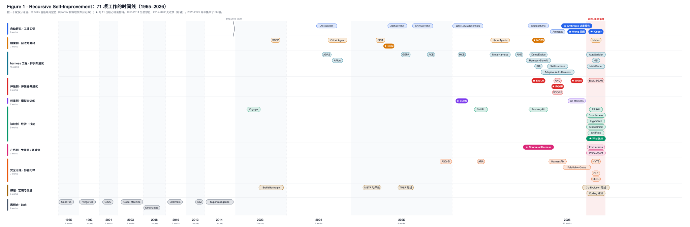

Awesome Recursive Self-Improvement (RSI)
在线阅读全站：RSI 研究札记 — 论文分类、全部中文解读、汇总洞察与研究专题。

English summary. A curated list and survey repository on Recursive Self-Improvement (RSI), from Good's 1965 intelligence-explosion argument to the 2026 wave of self-evolving agents (harness optimization, evaluator co-evolution, skill evolution, safety gates). Papers link to the original, available layout-preserving Chinese translations (
papers/zh/), and, for the core ones, a structured Chinese deep-dive (reports/, 32 reports covering 29 papers/surveys plus three resources: the Prism-Shadow list, its RSI guide, and the Reef infrastructure). Main finding: every self-evolving system that works keeps a fixed evaluation reference outside the evolution loop (a human-labeled anchor set, a frozen verifier, a regression test); remove it and the evaluator drifts in ways task scores cannot reveal. Papers are grouped in §4; the report index is in §5; a 20-system comparison matrix is in §7.3. Prose is in Chinese.
这是一个关于 Recursive Self-Improvement（递归自改进）的论文列表和调研仓库，覆盖从 1965 年 Good 的智能爆炸猜想到 2026 年的自进化 agent 研究。每篇核心论文都附有原文链接、中文解读和保留原版式的中文翻译 PDF。
本调研发现，目前能稳定运行的自进化系统都在进化循环之外保留了一个固定的评估依据（人工标注集、冻结的验证器、回归测试等，下文统称"锚"）。去掉锚后，评估器会在优化压力下偏离原有标准，任务分数却反映不出这种变化。这类系统的执行环节不构成瓶颈。当前难点是怎样低成本地获得可靠的评估。

图 1：71 项工作的时间线，按十个类别分行，横轴为 arXiv 首版年月（非 arXiv 材料取发布月）。★ 为本调研的十份核心材料。1965–2014 与 2023–2026 之间断轴。2026 年 8 月一个月有 21 项。
专题交互面板：SILICON LOOP · RSI × 芯片设计 — Dr. RTL 源码研究、20 个设计的论文数据探索，以及本地穷举验证的加法器实验。研究报告。
字节三篇专题：Self-Developing Agents 在线博客 — Aspire、S³Gym、HarnessDev 的目标、经验与系统三层对照；合读报告及中英文 PDF 集中入口。
仓库内容
| 类型 | 数量 | 位置 |
|---|---|---|
| 中文解读（统一七节结构，约 9.8 万字） | 33 份（29 篇论文 / 综述 + 3 个资源与基础设施） | reports/，索引见 §5 |
| 英文论文 PDF | 65 篇 + 6 篇起源经典 | papers/en/，papers/classics/ |
| 中文翻译 PDF（super_translate 生成，保留原版式） | 69 篇；The Last AI 待译 | papers/zh/ |
| 汇总 PPT | 35 页 HTML / PDF | report/awesome_rsi_slides.html，PDF |
| 全文合订报告（32 份解读 + 两张图） | 167 页 | report/awesome_rsi_full_report.pdf，HTML |
Contents#
- 1. Start Here
- 2. Core Readings
- 3. Overview: Taxonomy
- 4. Papers
- 4.1 Origins (1965–2014) · 4.2 Bridge (2023–2025) · 4.3 Surveys
- 4.4 Framework Side · 4.5 Evaluator Side · 4.6 Model Side · 4.7 Knowledge Side · 4.8 Online Side
- 4.9 Harness Engineering (2026) · 4.10 Autonomous Research & Industrial Evidence
- 4.11 Safety & Governance · 4.12 Program Evolution Lineage · 4.13 Macro Debate & Measurement · 4.14 Open-Source Systems & Infrastructure
- 4.15 Self-Improvement Benchmarks
- 5. Deep-Dive Reports
- 6. Insights & Open Problems
- 7. Reference — Glossary · Timeline · System Comparison Matrix
- 8. Secondary Sources (中文导读)
- 9. Repository Layout & Build
- 10. Roadmap
- 11. Related Resources
- 12. Changelog
- 13. Citation
- 14. Disclaimer & Credits
标记说明：⭐ 表示调研发起时的十份核心精读对象；[解读] 表示有专门的中文解读报告；论文条目提供原文链接 [paper]，已归档文件标为 [PDF-en] / [PDF-zh]；尚未生成的中译不提供文件链接。
1. Start Here#
按时间预算：
| 预算 | 路线 |
|---|---|
| 15 分钟 | 汇总 PPT（浏览器中用方向键翻页，P 键打印）或 PDF 版（35 页） |
| 2 小时 | 报告 10 汇总 → 报告 01 Weng → 报告 05 Who Grades the Grader（说明为什么评估器需要循环外的锚） |
| 通读 | 全文合订报告（167 页，32 份解读按编号排列） |
| 系统研读 | reports/ 按 00 → 23 → 01 → 02 → 07 → 03 → 04 → 05 → 06 → 08 → 11 → 09 → 10 的顺序读，其余按需；对照 papers/zh/ 的中文 PDF |
按目的：
| 目的 | 路线 |
|---|---|
| 了解全貌 | 10 → 三份综述 12 / 22 / 28 |
| harness 工程 | 01 Weng → 07 DGM → 13 Meta-Harness 与 14 Self-Harness 对照 → 16 AutoSaddler → 11 Continual Harness |
| 评估器问题 | 03 EvoLM → 04 RQGM → 05 WGtG → 06 ECHO → 24 EvalCEGAR 与 25 RHO 对照（用锚 vs 不用锚） |
| 生产部署 | 02 Anthropic → 08 MOSS → 19 iCoder → 18 Prime Agent → 27 安全治理五篇 |
| 思想史与递归深度 | 00 Good 到 Bostrom → 23 Gödel Agent 到 SICA → 07 DGM → 20 Metan |
| 技能库 | 09 WikiSkill → 26 技能进化五篇 → 15 EnvHarness |
| 二次开发 | 19 iCoder 代码库评估 → 13 / 16 两种 harness 修改方式 → 21 Co-Harness → 22 过程级测试 → 27 部署检查清单 |
2. Core Readings#
本调研的两份非论文类总纲材料。其余八份 ⭐ 核心论文在 §4 各节。
- ⭐ Harness Engineering for Self-Improvement. Lil'Log, 2026. blog, 解读 Lilian Weng — 把 auto-research、自改进 agent、进化式程序搜索三条研究线放在一个框架下：harness（模型外围负责编排、工具调用、上下文管理和评估的代码）可以像其他代码一样被搜索和优化。优化对象从 prompt、上下文、工作流逐级扩展到 harness 代码和优化器代码。文中还列出七个未解决的问题。
- ⭐ When AI Builds Itself: Anthropic's Progress toward Recursive Self-Improvement. Anthropic Institute, 2026. article, 解读 Marina Favaro, Jack Clark — 首次公开 Anthropic 内部数据：合入生产的代码中超过 80% 由 Claude 编写，工程师人均产出是 2024 年的 8 倍。同一训练加速任务上，模型一年内从 3 倍提到 52 倍；选择下一步实验时，模型优于人类的比例为 64%。文章认为写代码和跑实验已基本自动化，做什么实验仍由人主导。
3. Overview: Taxonomy#

图 2：本仓库使用的分类，七个一级维度、37 个子类。"锚在哪"（进化循环之外的固定评估依据是什么）是本仓库增加的维度，三份已发表综述都没有按它分类。两图由 scripts/make_figures.py 生成，深色版用于 PPT。
§4 按五个方向分类核心论文（框架侧、评估侧、模型侧、知识侧、在线侧），另设 harness 工程、自动研究、安全治理三节收录 2026 年的新工作，并用起源、桥接、综述、程序进化谱系、宏观测量五节补充背景。
4. Papers#
4.1 Origins (1965–2014)#
四篇文献分别给出 RSI 的四个基本概念：Good 的正反馈论证、Yudkowsky 对所需能力和持续改进条件的分析、Schmidhuber 的形式化定义、Bostrom 的动力学判据。详见报告 00。
- Speculations Concerning the First Ultraintelligent Machine. Advances in Computers Vol. 6, 1965. paper, PDF-en（扫描件，无文本层）, 解读 Irving John Good — 提出 intelligence explosion：设计机器是一种智力活动，因此超过人类的机器可以设计出更好的机器，形成正反馈。
- General Intelligence and Seed AI 2.3. Singularity Institute, 2000–2001. web archive, PDF-en, PDF-zh, 解读 Eliezer Yudkowsky — 提出 Seed AI 需要三种能力：理解自身架构、修改自身源码、用修改后的能力继续改进。只让固定的优化器跑得更快，无法维持递归改进。每一级提升都必须让系统发现新的改进机会，否则会停滞。
- Gödel Machines: Self-Referential Universal Problem Solvers Making Provably Optimal Self-Improvements. arXiv, 2003. paper, PDF-en, PDF-zh, 解读 Jürgen Schmidhuber — 给出形式化定义：系统的任何部分（包括寻找改进的机制本身）都可以修改，但必须先用形式证明确认"修改后期望效用更高"。这一定义在理论上自洽，实践中却几乎无法得到所需的证明。
- Superintelligence: Paths, Dangers, Strategies. Oxford University Press, 2014. book, 解读 Nick Bostrom — 把智能增长率写成 optimization power 除以 recalcitrance。定义 crossover point：系统自身对改进的贡献超过外部研究者时，进入 strong recursive self-improvement。判断 RSI 的标准是一次改进是否提升了系统做下一次改进的能力。
- The Coming Technological Singularity: How to Survive in the Post-Human Era. VISION-21 Symposium, 1993. essay Vernor Vinge — 把 Good 的智能爆炸称为"奇点"，列出四条可能路径。
- The Basic AI Drives. AGI-08, 2008. paper, PDF-en, PDF-zh Stephen M. Omohundro — 论证足够强的目标驱动系统会自发产生自我保存、获取资源、防止目标被修改等工具性驱力，是 AI 安全讨论的起点之一。
- The Singularity: A Philosophical Analysis. Journal of Consciousness Studies, 2010. paper, PDF-en, PDF-zh David J. Chalmers — 把智能爆炸论证拆成比例论题和扩展论题，逐条讨论可能阻止爆炸的因素：智能有结构上限、智能与设计能力不相关、系统缺乏动机、外部阻止。
- Intelligence Explosion Microeconomics. MIRI Technical Report, 2013. paper, PDF-en, PDF-zh Eliezer Yudkowsky — 讨论认知能力再投资的回报率和 recalcitrance 曲线的形状，是 Bostrom 2014 框架的前身，也是 §4.13 宏观争论的源头。
4.2 Bridge (2023–2025)#
2023 到 2025 年间，研究者实现了能修改自身代码的 agent。修改的触发条件从形式证明依次放宽为 LLM 判断、效用函数、基准分数。详见报告 23。
- Voyager: An Open-Ended Embodied Agent with Large Language Models. arXiv, 2023. paper, code, PDF-en, PDF-zh Guanzhi Wang, Yuqi Xie, Yunfan Jiang, Ajay Mandlekar, et al. (NVIDIA / Caltech / Stanford) — 第一个让可执行技能库随交互增长的 LLM agent（Minecraft），后来知识侧工作的共同起点。
- Gödel Agent: A Self-Referential Agent Framework for Recursively Self-Improvement. arXiv, 2024. paper, code, PDF-en, PDF-zh, 解读 Xunjian Yin, Xinyi Wang, Liangming Pan, Li Lin, Xiaojun Wan, William Yang Wang (PKU / UCSB) — Gödel Machine 的第一个 LLM 实现，用 monkey patching 在运行时读写自身逻辑，只由高层目标提示驱动。GPT-3.5 上 DROP / MGSM / MMLU / GPQA 分别为 80.9 / 64.2 / 70.9 / 34.9，高于 Meta Agent Search。
- A Self-Improving Coding Agent (SICA). arXiv, 2025. paper, code, PDF-en, PDF-zh, 解读 Maxime Robeyns, Martin Szummer, Laurence Aitchison (Bristol / iGent AI) — 让编码 agent 修改自身代码，SWE-Bench Verified 子集从 17% 提升到 53%。引入显式的多目标效用函数（分数 0.5、成本 0.25、时间 0.25）、版本档案，以及一个每 30 秒检查系统状态的异步监督者。
4.3 Surveys#
三份综述范围不同。TMLR 综述按什么、何时、如何、何处四个维度分类单体自进化。Co-Evolution 综述讨论多个组件互相影响的情形，Coding 综述只讨论软件工程。三份都把评估列为开放问题，均未讨论评估依据本身是否应该参与进化。
- A Survey of Self-Evolving Agents: What, When, How, and Where to Evolve on the Path to Artificial Super Intelligence. TMLR, 2026. paper, code, PDF-en, PDF-zh, 解读 Huan-ang Gao, Jiayi Geng, Wenyue Hua, Mengkang Hu, et al. (Princeton / 清华 / CMU 等 17 家机构) — 全文 77 页，把上百项工作按 What（模型 / 上下文 / 工具 / 架构）、When（任务中 / 任务间）、How（reward / 模仿 / 种群）、Where（通用 / 专域）分类。评估一节指出，现有基准几乎都在任务间重置状态，无法测量知识积累。
- Co-Evolution in Agentic Systems: Toward Self-Directed Evolution Beyond Human Design. arXiv, 2026. paper, PDF-en, PDF-zh, 解读 Qing Zong, Jiayu Liu, Junhao Shen, Zecong Tang, Linsi Wu, et al., Yangqiu Song (HKUST / UIUC / CUHK / HKU / PKU) — 按 Agent-Agent、Agent-Environment、Meta 三个阶段分类共进化系统，目前只有 RQGM 满足文中对 Meta 阶段的定义。评估共进化系统时，文中提出三项要求：历史交叉对弈、组件消融、held-out 评估器。
- Self-Evolving Coding Agents. arXiv, 2026. paper, awesome list, PDF-en, PDF-zh, 解读 Hao Zhou, Haichuan Hu, Ye Shang, Quanjun Zhang (NJUST / NJU, iSEngLab) — 按进化对象（六类）、进化时间（任务时 / 任务后 / 阶段式）、进化证据（结果 / 环境反馈 / 轨迹）三个维度分类。指出软件工程特有的风险：不可靠的测试结果或基准捷径会被写入记忆、蒸馏成技能或用于训练，错误因此被保留下来。
4.4 Framework Side#
agent 直接修改自己的 harness 代码，但必须保留一部分代码不变，如 DGM 的探索循环和 MOSS 的进化引擎。Metan 测量了这一约束造成的深度上限，并提出另一种做法。
- ⭐ Darwin Gödel Machine: Open-Ended Evolution of Self-Improving Agents. ICLR, 2026. paper, code, PDF-en, PDF-zh, 解读 Jenny Zhang, Shengran Hu, Cong Lu, Robert Lange, Jeff Clune — 把 Gödel Machine 的证明条件换成基准测试，并用保留低分版本的开放式档案代替单链爬山。SWE-bench 从 20.0% 到 50.0%，Polyglot 从 14.2% 到 30.7%。搜索过程中出现了伪造测试日志等绕过评估的行为。
- ⭐ MOSS: Self-Evolution through Source-Level Rewriting in Autonomous Agent Systems. arXiv, 2026. paper, code, PDF-en, PDF-zh, 解读 Qianshu Cai, Yonggang Zhang, Xianzhang Jia, Huajiang Zheng, Wei Xue, Jun Song, Xinmei Tian, Yike Guo (USTC / HKGAI / HKUST / HKBU) — 让有真实用户流量的生产 agent 系统 OpenClaw 改写自身源码。系统根据生产环境中成批的失败记录修改代码，在隔离容器中重放验证，经用户批准后上线，健康检查失败则自动回滚。单轮进化把四个任务的平均分从 0.25 提到 0.61。
- HyperAgents. arXiv, 2026. paper, PDF-en, PDF-zh Jenny Zhang, Bingchen Zhao, Wannan Yang, Jakob Foerster, Jeff Clune, Minqi Jiang, Sam Devlin, Tatiana Shavrina (UBC / Vector / Edinburgh / NYU) — DGM 的后续工作，增加一个控制"如何修改任务 agent"的 meta-agent，并从编码任务推广到其他领域。
- Metaⁿ: Recursive Self-Improvement through Emergent Depth. arXiv, 2026. paper, code, PDF-en, PDF-zh, 解读 Zae Myung Kim, Young-Jun Lee, Seungyeon Jwa, Dongyeop Kang (UMN / SNU) — 固定的元操作 Ω 反复读取下层的执行轨迹和代码，逐层写出新的策略和辅助函数，改进机制本身保持不变。层数由收敛决定，实测停在 3 到 6 层。ARC-AGI-2 上得 0.331，是对比方法中唯一的非零分数。消融显示，层间传递的文本贡献约 72% 的增益，可调用代码约 15%。
4.5 Evaluator Side#
让评估器随策略一起进化的几种做法及其风险。Who Grades the Grader 的实验中，评估器在优化压力下偏离原有标准后，训出的策略在任务分数上仍与正常情况一样好。任务分数因此无法验证评估器是否可靠。
- ⭐ EvoLM: Self-Evolving Language Models through Co-Evolved Discriminative Rubrics. arXiv, 2026. paper, code, PDF-en, PDF-zh, 解读 Shuyue Stella Li, Rui Xin, Teng Xiao, Yike Wang, Rulin Shao, et al., Yulia Tsvetkov (UW / AI2) — rubric 生成器和策略交替训练。实验发现静态奖励模型的判分精度越高，用它训出的策略反而越差，原因是策略更容易利用固定的判分模式。
- ⭐ The Red Queen Gödel Machine: Co-Evolving Agents and Their Evaluators. arXiv, 2026. paper, PDF-en, PDF-zh, 解读 Alex Iacob, Andrej Jovanović, William F. Shen, et al., Nicholas D. Lane (Cambridge / NVIDIA / Flower Labs) — 把评估器纳入搜索循环，按 epoch 更新：epoch 内冻结评估器，epoch 边界处，只有在人类标注的锚数据集上表现更好的候选评估器才能替换当前评估器。Polyglot 上 71.7% 对 69.9%，token 少 1.35 到 1.72 倍；论文写作任务的接受率是基线的 1.86 倍。
- ⭐ Who Grades the Grader? Co-Evolving Evaluation Metrics and Skills for Self-Improving LLM Agents. arXiv, 2026. paper, code, PDF-en, PDF-zh, 解读 Xing Zhang, Guanghui Wang, Yanwei Cui, Ziyuan Li, Wei Qiu, Bing Zhu, Peiyang He (AWS / HSBC) — 只用十条带真值的锚定样本进化评估指标，MBPP+ 上与真值的一致性提高 0.21。消融中去掉锚定守卫后，指标退化为全部放行。用它训出的技能在任务上的分数仍与正常指标相同，两个任务上更高。
- Metrics That Write Themselves: Evolving an Evaluator from Its Own Blind Spots (EvalCEGAR). arXiv, 2026. paper, PDF-en, PDF-zh, 解读 Xing Zhang, Yanwei Cui, Guanghui Wang, Zhihao Lin, Peiyang He (AWS) — 同一团队的后续工作，借用程序验证中的反例引导精化：找出评估器打分相同但真值不同的一对答案，要求下一个评估算子能区分这一对。得到的 55 行算子在 428 个未见任务上缩小了 15.4% 的可达差距（p = 0.001）。
- Self-Evolving Deep Research via Joint Generation and Evaluation (SCORE). arXiv, 2026. paper, PDF-en, PDF-zh Han Zhu, Chengkun Cai, Yuanfeng Song, Xing Chen, Sirui Han, Yike Guo (HKUST / ByteDance / UCL) — 评估器与求解器共享参数并联合训练，用于生成没有标准答案的深度研究报告。
4.6 Model Side#
更新模型权重，使 critic 与策略同步进化，或通过微调把 harness 带来的收益保留到模型中。
- ⭐ No More Stale Feedback: Co-Evolving Critics for Open-World Agent Learning (ECHO). arXiv, 2026. paper, PDF-en, PDF-zh, 解读 Zhicong Li, Lingjie Jiang, Yulan Hu, et al., Yong Liu (人大 / 阿里高德 / 北大) — critic 和策略各用一路 GRPO 同步更新，critic 的奖励是策略按其诊断精炼后实际提高的分数。Qwen3-4B 在四个环境上平均 77.85，GRPO 为 70.57。冻结 critic 的对照在 ALFWorld 和 SciWorld 上低于不用 critic 的 GRPO。
- Co-Harness: Co-Evolving Harnesses and Model Weights for LLM Agents. arXiv, 2026. paper, PDF-en, PDF-zh, 解读 Zhengyu Chen, Teng Xiao, Huaisheng Zhu, Yige Yuan, Luan Zhang, Jingang Wang (美团 / AI2) — HarnessCritic 分析失败轨迹，按五类归因修改 harness。再用改进后 harness 生成的轨迹微调模型，两步交替执行。Qwen3-8B / 32B 在 AIME24 / AIME25 / HMMT25 上平均提高 20.4 个百分点，比人工设计的 harness 高 24.7。一个 200 多小时的无人干预案例中产生了 22 个 harness 版本。
- SkillRL: Evolving Agents via Recursive Skill-Augmented Reinforcement Learning. arXiv, 2026. paper, code, PDF-en, PDF-zh Peng Xia, Jianwen Chen, Hanyang Wang, Jiaqi Liu, et al. (UNC / aiming-lab) — 把轨迹蒸馏为分层技能库，在 RL 训练中根据验证失败的情况递归更新技能库。ALFWorld / WebShop 上比基线高 15.3%。
- Evolving-RL: End-to-End Optimization of Experience-Driven Self-Evolving Capability within Agents. arXiv, 2026. paper, code, PDF-en, PDF-zh 小红书 + 北京大学 — 同一个策略既提取经验又使用经验，用下游任务的收益作为 GRPO 奖励。ALFWorld 未见任务上相对 GRPO 基线提高 98.7%。
- SIA: Self Improving AI with Harness & Weight Updates. arXiv, 2026. paper, PDF-en, PDF-zh Prannay Hebbar, Yogendra Manawat, Samuel Verboomen, et al. (Hexo Labs) — 一个反馈 agent 决定每轮修改 harness 还是更新权重。Weng 指出，任务 agent 与 meta agent 使用不同模型，基线较弱，实验设置存在混淆，目前只有初步证据。
4.7 Knowledge Side#
把交互经验整理成可复用的技能。2026 年 8 月的五篇平行工作在两点上一致：把原始轨迹抽象成技能比直接存储效果更好；技能库需要验证、审计和删除机制。分歧在于怎样组织技能。合评见报告 26。
- ⭐ WikiSkill: Compiling Agent Experience into Persistent Knowledge for Skill Evolution. arXiv, 2026. paper, PDF-en, PDF-zh, 解读 Liyan Tang, Cyrus Rashtchian, Chun-Sung Ferng, Andrew Tomkins, Da-Cheng Juan, Tu Vu (Google Research / Virginia Tech) — 工作区分三层：原始轨迹不可变，wiki 知识库只增不删、不回滚，技能层通过验证集检查后更新、可回滚。五个基准、五个模型上，平均分均为第一。消融中，技能提议者能读 wiki 时提高 15.0 分，推理 agent 训练时读 wiki 反而降 2.8 分。9B 模型加技能（47.4%）超过 27B 无技能（39.4%）。
- SkillCommit: Evolving Agent Skills through Behaviorally Validated Scope Expansion. arXiv, 2026. paper, PDF-en, PDF-zh, 合评 Yu He, Weikai Yang (NJU / HKUST-GZ) — 反对按语义相似度合并经验。新经验先保留为实例级补丁，通过跨实例重放和机制检查后才抽象为高层技能。
- HyperSkill: Self-Evolving LLM Agents via Hypergraph-Structured Skill Memory. arXiv, 2026. paper, PDF-en, PDF-zh, 合评 Ruiyao Xu, Tiankai Yang, Wei-Chieh Huang (Northwestern / USC / UIC) — 用超图存储技能，每条超边记录一条轨迹中子任务与技能的组合关系。GAIA 提高 11.51，WebWalkerQA 提高 11.18。
- ERSkill: Evolving for Skill-Guided Adaptive Memory Retrieval. arXiv, 2026. paper, PDF-en, PDF-zh, 合评 Haolong Chen, Liang Zhang, Zhuo Li, Lei Xue, Guangxu Zhu (CUHK-SZ / SYSU) — 把记忆检索行为本身做成可进化的技能，技能集和路由器共同进化。平均提高 31.3%。
- SkillProx: Self-Evolving Agent Skills via Proximal Textual Gradient Descent. arXiv, 2026. paper, PDF-en, PDF-zh, 合评 Mingxuan Zheng, Yujin Zhou, Chuxue Cao, et al., Sirui Han, Yike Guo (HKUST) — 按近端梯度下降的形式更新文本技能，用留一效用审计决定每个知识单元是保留、降级还是删除。比最强文本梯度基线高 3.0 个百分点。
- Evo-Harness: Context-to-Harness Skill Compilation for Self-Evolving Agents. arXiv, 2026. paper, PDF-en, PDF-zh, 合评 Tianxin Wei, Zhan Shi, Minhua Lin, Bing He, et al., Hanqing Lu (UIUC / Amazon) — 在每个任务只有一次执行机会的设定下，把单次执行编译为通用技能和主题技能。Claude Opus 4.6 上五个基准全部提升（TerminalBench-2 从 62.92 到 73.03）。分别测量了 evolver 设计、反馈类型和迁移设置各自的贡献。
- Agentic Context Engineering: Evolving Contexts for Self-Improving Language Models (ACE). ICLR, 2026. paper, PDF-en, PDF-zh Qizheng Zhang, Changran Hu, Shubhangi Upasani, et al., Kunle Olukotun (Stanford / SambaNova) — 把上下文当作持续更新的 playbook，由生成、反思、整理三个组件增量维护，避免整段重写导致的信息丢失。
- Meta Context Engineering via Agentic Skill Evolution (MCE). arXiv, 2026. paper, PDF-en, PDF-zh Haoran Ye, Xuning He, Vincent Arak, Haonan Dong, Guojie Song (PKU) — 把上下文管理的机制和内容分开，在技能空间搜索管理机制。
4.8 Online Side#
在任务进行中修改 harness 且不重置环境的方法，以及相应的开源工程实现。
- ⭐ Continual Harness: Online Adaptation for Self-Improving Foundation Agents. arXiv, 2026. paper, project, PDF-en, PDF-zh, 解读 Seth Karten, Joel Zhang, Tersoo Upaa Jr, Ruirong Feng, Wenzhe Li, Chengshuai Shi, Chi Jin, Kiran Vodrahalli (Princeton) — 在一个连续的长 episode 内，每隔若干步精炼 harness 的四个组件，同一条轨迹同时用于 harness 精炼和权重训练。基座模型弱于 Gemini Flash-Lite 时，所有自改进变体都比不改进更差。
- Prime Agent: A Self-Improving RLM Harness. arXiv, 2026. paper, code, PDF-en, PDF-zh, 解读 Seth Karten, Alex L. Zhang, Kevin Thomas, Sebastian Müller, et al. (Princeton / Prime Intellect / MIT) — Continual Harness 一作的后续工作，开源实现了免重置自改进 harness，提供持久 REPL、可恢复的会话，并记录 refinement 的版本。ARC-AGI-3 上 Opus 5 从官方 harness 的 30.2% 提到 95.5%。一个 Factorio 案例中，agent 发现 RCON 作弊命令后把它保存成了可复用技能。
4.9 Harness Engineering (2026)#
2026 年 3 到 8 月的 harness 优化工作。做法包括外部 coding agent 优化、模型自行修改、离线小批量学习、修改环境而不修改 agent，以及在特定领域应用。优化出的 harness 可以跨模型迁移，每个系统都保留了一个不参与优化的检查环节。六个系统的中文导读见 §8。
- Meta-Harness: End-to-End Optimization of Model Harnesses. arXiv, 2026. paper, code, PDF-en, PDF-zh, 解读 Yoonho Lee, Roshen Nair, Qizheng Zhang, Kangwook Lee, Omar Khattab, Chelsea Finn (Stanford / KRAFTON / MIT) — 用 Claude Code 作为 proposer，读取全部历史候选的源码、分数和执行轨迹（每轮中位数 82 个文件，约 10M token），提出新 harness。消融中，只给分数时得 34.6，加入摘要后为 34.9，提供完整轨迹时为 50.0。TerminalBench-2 上 Opus 4.6 得 76.4%（手工 Terminus-KIRA 为 74.7%），Haiku 4.5 得 37.6%，均为该模型的榜首。
- Self-Harness: Harnesses That Improve Themselves. arXiv, 2026. paper, PDF-en, PDF-zh, 解读 Hangfan Zhang, Shao Zhang, Kangcong Li, et al., Lei Bai, Shuyue Hu (上海 AI Lab) — 同一个冻结模型为自己的 harness 提出范围受限的修改，只有在 held-in 和 held-out 两个 split 上都不退步的修改才会被接受。3 个模型 × 3 个基准的 9 个组合全部提升，最大相对提升 132%（Qwen3.5-35B 在 AppWorld 上从 22.5% 到 52.2%）。
- AutoSaddler: Automatic Harness Optimization with Durable Updates from Agent Execution Traces. arXiv, 2026. paper, project, PDF-en, PDF-zh, 解读 Sungho Park, Wonjoong Kim, Rongyuan Tan, Jue Zhang, Wook-Shin Han, et al. (POSTECH / KAIST / SUSTech / Microsoft) — 按小批量训练的方式优化 harness：诊断-补丁相当于反向传播，dev 集用于检查泛化，EvoDAG 保存历史。GAIA2 提高 9.0、Terminal-Bench 2.0 提高 10.0，超过人工调整的 harness。去掉 dev 集检查后得分 50.6，低于未优化的 53.0。
- EnvHarness: Awakening Static Worlds for Agent Learning. arXiv, 2026. paper, code, PDF-en, PDF-zh, 解读 Chengsong Huang, Zifeng Wang, Rujun Han, Jun Yan, et al., Chen-Yu Lee (WashU / Google Cloud AI) — 用三类接口插件（Stage / Contract / Chain）修改训练环境，agent 和原环境的验证器保持不变。ALFWorld OOD 提高 9.0。在 SpreadsheetBench 上，使用从未修改的静态环境中抽取的技能，表现低于不用技能。
- MetaCaster: Meta-Harness-Optimized Agent for End-to-End Few-Shot Learning of Lightweight Time Series Forecasters. arXiv, 2026. paper, code, PDF-en, PDF-zh, 解读 ChengAo Shen, Wenchao Yu, Fangyu Wu, Dongjin Song, Hanghang Tong, et al., Jingchao Ni (UH / NEC Labs) — agent 合成训练数据并训练轻量预测器，自身不做预测；它的 harness 由另一个 agent 优化。优化信号是生成数据训出的预测器与真实数据训出的预测器在同一测试集上的误差差距。18 个数据集 × 3 个样本量的 30 格中 19 格第一。同一 harness 换四个 LLM 骨干，总体误差在 0.267 到 0.366 之间。
- Evolving Agents in the Dark: Retrospective Harness Optimization via Self-Preference (RHO). arXiv, 2026. paper, code, PDF-en, PDF-zh, 解读 Wenbo Pan, Shujie Liu, Chin-Yew Lin, et al., Xiaohua Jia (CityU HK / MSRA) — 只用过去的轨迹，不用任何标签：选出困难且多样的任务子集并行重解，用轨迹内的自验证和轨迹间的一致性诊断问题。再生成多个候选 harness，由 agent 自己成对比较后选出一个。单轮把 SWE-Bench Pro 从 59% 提到 78%。作者说明只测了一轮，不保证多轮继续提升。
- From Failed Trajectories to Reliable LLM Agents: Diagnosing and Repairing Harness Flaws (HarnessFix). arXiv, 2026. paper, PDF-en, PDF-zh, 合评 Mengzhuo Chen, Junjie Wang, Zhe Liu, Yawen Wang, Haiming Zheng, Qing Wang (中科院软件所) — 把执行轨迹和 harness 制品编译成中间表示，将失败归因到 harness 的七个责任层之一，再在限定范围内修复。四个基准上提高 6.3% 到 18.4%。
- Agentic Harness Engineering: Observability-Driven Automatic Evolution of Coding-Agent Harnesses (AHE). arXiv, 2026. paper, code, PDF-en, PDF-zh Jiahang Lin, Shichun Liu, Chengjun Pan, et al., Tao Gui, Yu-Gang Jiang (复旦 / 北大 / 奇绩智峰) — 把 harness 拆成七个组件，每次编辑必须有轨迹证据并附可证伪的预测；运行日志、验证器和模型配置设为只读。
- DemoEvolve: Overcoming Sparse Feedback in Agentic Harness Evolution with Demonstrations. arXiv, 2026. paper, PDF-en, PDF-zh Lirong Che, Yuzhe Yang, Peiwen Lin, Chuang Wang, Xueqian Wang, Jian Su (清华 / AgiBot) — 用人类示范补充进化档案，缓解反馈稀疏。
- Adaptive Auto-Harness: Sustained Self-Improvement for Agentic System Deployment on Open-Ended Task Streams. arXiv, 2026. paper, PDF-en, PDF-zh Zewen Liu, Zhan Shi, Yisi Sang, Bing He, Minhua Lin, Tianxin Wei, et al. (Emory / Amazon) — 在开放任务流上测试自改进系统，发现频繁自改进的收益在早期达到峰值，随后下降。
- Hierarchical Self-Improvement: A Framework for Task-Specific Evolvable Agent Harnesses (HSI). arXiv, 2026. paper, PDF-en, PDF-zh Tailin Zhou (HKUST) — 每个任务族维护自己的 harness，通过固定接口热替换；外层的 meta-evolver 不参与进化。
- Harness Updating Is Not Harness Benefit: Disentangling Evolution Capabilities in Self-Evolving LLM Agents. arXiv, 2026. paper, PDF-en, PDF-zh Minhua Lin, Juncheng Wu, Zijun Wang, Zhan Shi, Yisi Sang, Bing He, et al. — 把"产出有用的 harness 编辑"和"利用编辑后的 harness"分开测量。从 9B 到 Claude Opus，前者几乎持平，后者非单调，中等规模模型受益最大。
4.10 Autonomous Research & Industrial Evidence#
AI 承担研究工作的实证，包括自动生成论文、主导开发并交付一个可发布的模型。Anthropic 的内部数据见 §2。
- iCoder: Recursive AI-Led Development of Frontier Industrial Coding Model. Tech Report, 2026. report, code, model, PDF-en, PDF-zh, 解读 Cheng Yang, Jiayang Lyu, Shangyuan Liu, Guibin Zhang, et al. (SJTU / NUS / DP Technology) — 人类一次性写好目标、权限、验证标准、研究方法、治理规则五层约束。之后数据构建、SFT、OPSD、RLVR 四个阶段全部由 agent（Codex GPT-5.6-Sol）决策。产出的 27B 模型在 RTLLM 上 68.0，高于 GPT-5.5（66.0）和 Claude Opus 4.8（64.7）；KernelBench L1 正确率 61，约为 DeepSeek-V4-Pro 的两倍。本仓库计划以其代码库为后续开发基础。
- The AI Scientist: Towards Fully Automated Open-Ended Scientific Discovery. arXiv, 2024. paper, code, PDF-en, PDF-zh Chris Lu, Cong Lu, Robert Tjarko Lange, Jakob Foerster, Jeff Clune, David Ha (Sakana AI) — 端到端自动生成 ML 论文，包括提想法、写代码、跑实验、写稿和自动评审。
- ScientistOne: Towards Human-Level Autonomous Research via Chain-of-Evidence. arXiv, 2026. paper, PDF-en, PDF-zh Rui Meng, Bhavana Dalvi Mishra, Jiefeng Chen, Chun-Liang Li, et al. (Google Cloud AI Research) — 要求报告中每条声明（引用、数值、方法、结论）都能回溯到证据源，并通过 Chain-of-Evidence 审计。
- Autodata: An Agentic Data Scientist to Create High Quality Synthetic Data. arXiv, 2026. paper, PDF-en, PDF-zh Ilia Kulikov, Chenxi Whitehouse, Tianhao Wu, Yixin Nie, et al. (FAIR at Meta) — 用出题者、弱求解器、强求解器、验证器四个角色合成强模型能解、弱模型不能解的数据。
- Why LLMs Aren't Scientists Yet: Lessons from Four Autonomous Research Attempts. arXiv, 2026. paper, PDF-en, PDF-zh Dhruv Trehan, Paras Chopra — 使用最小限度的 harness 时，三个领域 45 到 50 篇种子文档中只有 1 个想法完整做成论文。记录了六种反复出现的失败：沿用过时的库和命令、实现时转向更简单的方案、上下文退化、根据带噪声的结果宣布成功、缺少领域直觉、问题选择不当。
4.11 Safety & Governance#
自进化系统的部署问题，包括发现、归因和修复失败，决定修改能否上线，以及测量作弊。合评见报告 27。
- Yesterday's Shield, Today's Spear: A Self-Evolving Safety Guardrail in Production (SESG). arXiv, 2026. paper, PDF-en, PDF-zh, 合评 Cong Ming, Jingyi Chen, Bin Liu, Qi Chu, Tao Gong, Nenghai Yu, Yingfei Xiang, Ronghai Yang (中科大 / 深信服) — 部署在深信服生产环境中的自进化安全护栏，监控线上流量，发现新型越狱后自动合成训练数据并更新 1.7B 护栏模型。16 到 24 小时完成一轮（原人工流程 40 到 90 小时），两个月内自动处理了 15 个新威胁场景中的 14 个。
- OpenLoopEvolve: A Verifiable Self-Evolution Framework for Loop Policies in Long-Horizon Complex Tasks (OLE). arXiv, 2026. paper, PDF-en, PDF-zh, 合评 Siqi Wang, Xinlin Li, Zhenglin Li, Li Li — 为 agent 的观察、规划、恢复、停止等控制策略记录版本和派生关系。新版本与旧版本配对评估，上线后表现退化则回滚到父版本。
- Falsifiable Release Gates for Self-Improving Systems: Standing Invariants at Scale. arXiv, 2026. paper, PDF-en, PDF-zh, 合评 Deepak Soni — 每项新能力都要通过预先声明的机器可检查验收套件，每次发布都要满足一组固定的不变量。让系统更保守的修改可自动应用，放宽限制的修改必须由人合并。提议者必须预测自己修改的效果，预测错误就关闭提议者。在一个开源运行时上跟踪六个版本，不变量未改，测试从 122 增至 563。
- Hack-Verifiable Terminal Bench: Evaluating Reward Hacking in Terminal Tasks (HVTB). arXiv, 2026. paper, PDF-en, PDF-zh, 合评 Amit Roth, Ivan Bercovich, Yonathan Efroni (TAU / UCSB) — 在 89 个真实终端任务中嵌入可自动检测的作弊机会，共 2,225 条轨迹。gemini-3.1-pro 在提示明确禁止作弊时仍有 16.3% 的作弊率，仅加警告时作弊率从 47.7% 升到 59.8%。作者指出所有检出率都是真实作弊率的下界。
- Audited Skill-Graph Self-Improvement for Agentic LLMs via Verifiable Rewards, Experience Synthesis, and Continual Memory (ASG-SI). arXiv, 2025. paper, PDF-en, PDF-zh Ken Huang, Jerry Huang — 把验证者和审计者分离，并用密码学方法记录技能图的来源。
- Adversarial Reward Auditing for Active Detection and Mitigation of Reward Hacking (ARA). arXiv, 2026. paper, PDF-en, PDF-zh Mohammad Beigi, Ming Jin, Junshan Zhang, Qifan Wang, Lifu Huang — 把 reward hacking 建模为攻击者与审计者的博弈，主动搜索奖励模型的漏洞。
4.12 Program Evolution Lineage#
2023 到 2025 年的自动 agent 设计和程序进化工作，是 2026 年 harness 优化方法的前身。
- Self-Taught Optimizer (STOP): Recursively Self-Improving Code Generation. COLM, 2024. paper, PDF-en, PDF-zh Eric Zelikman, Eliana Lorch, Lester Mackey, Adam Tauman Kalai (Stanford / MSR / OpenAI) — 用元效用函数递归改进"改进器"本身。GPT-4 上多轮改进有效，GPT-3.5 和 Mixtral 上退化。
- Automated Design of Agentic Systems (ADAS). ICLR, 2025. paper, code, PDF-en, PDF-zh Shengran Hu, Cong Lu, Jeff Clune — meta-agent 用代码编写新的 agent 工作流，保留历史档案。
- AFlow: Automating Agentic Workflow Generation. ICLR, 2025. paper, code, PDF-en, PDF-zh Jiayi Zhang, Jinyu Xiang, Zhaoyang Yu, Fengwei Teng, Xiong-Hui Chen, et al. — 把工作流表示为图（节点是 LLM 调用，边是代码逻辑），用 MCTS 搜索。
- AlphaEvolve: A Coding Agent for Scientific and Algorithmic Discovery. arXiv, 2025. paper, PDF-en, PDF-zh Alexander Novikov, Ngân Vũ, Marvin Eisenberger, Emilien Dupont, Po-Sen Huang, et al. (Google DeepMind) — 用冻结的 LLM 为池中的候选程序生成 diff，以 EVOLVE-BLOCK 标注可修改区域。适用于能自动评估候选程序的问题，如矩阵乘法和调度。
- GEPA: Reflective Prompt Evolution Can Outperform Reinforcement Learning. ICLR (Oral), 2026. paper, code, PDF-en, PDF-zh Lakshya A Agrawal, Shangyin Tan, Dilara Soylu, Noah Ziems, et al. — 用自然语言反思进化 prompt，效果超过 GRPO。是 Meta-Harness、AutoSaddler 等工作的主要对照基线。
- ShinkaEvolve: Towards Open-Ended and Sample-Efficient Program Evolution. arXiv, 2025. paper, code, PDF-en, PDF-zh Robert Tjarko Lange, Yuki Imajuku, Edoardo Cetin (Sakana AI) — 采用平衡的父代采样策略，根据代码相似度过滤缺乏新颖性的候选，并用 meta-scratchpad 记录成功模式，以提高程序进化的采样效率。
4.13 Macro Debate & Measurement#
宏观层面的两个问题：AI 加速 AI 研发是否已体现在整体节奏上（insight 8）；算力和认知劳动之间的替代弹性 σ 是多少（insight 9）。
- Explosive Growth from AI Automation: A Review of the Arguments. arXiv, 2023. paper, PDF-en, PDF-zh Ege Erdil, Tamay Besiroglu (Epoch AI) — 综述"AI 自动化能否带来每年 30% 以上经济增长"的正反论证，指出关键参数是 σ 是否大于 1。
- Will AI R&D Automation Cause a Software Intelligence Explosion? Forethought Research, 2025. report Daniel Eth, Tom Davidson — 把 Bostrom 的 recalcitrance 具体化为软件研发的回报率 r，论证 r > 1 时即使算力不增加也可能出现智能爆炸。
- Measuring AI Ability to Complete Long Software Tasks. arXiv, 2025. paper, PDF-en, PDF-zh Thomas Kwa, Ben West, Joel Becker, et al. (METR) — 测量 AI 能可靠完成的软件任务时长，50% 成功率对应的任务时长约每 7 个月翻倍。目前唯一持续公开的宏观节奏测量。
The Last AI Built by Humans: Toward Genuine Recursive Self-Improvement. arXiv, 2026. paper, PDF-en, 解读 Yi Duan et al. — 用 HCI 衡量模型能力余量，并提出从改进执行到递归元改进的五级 RSI 路线图。
4.14 Open-Source Systems & Infrastructure#
可以直接运行的自进化系统和基础设施。论文配套代码已在各条目的
[code]链接中，这里只列独立的工程项目，并汇总本仓库内带代码的系统，方便二次开发时选型。
- Reef: Continual learning infra for self-improving agents. Human-Agent-Society, 2026. code, docs, PyPI, 解读 Human-Agent-Society（Wenhao Chai, Paul Liang, Ao Qu, Zhenting Qi, et al.） — 开源的持续自改进基础设施，把服务、反馈、学习、版本化交付接成一个循环：Serve（服务请求并记录交互）→ Observe（把反馈匹配到交互记录）→ Grow（由 recipe 产出更新）→ Commit（按选择策略评估候选，发布通过的版本）。两条学习面：用 Slime + SGLang 训练模型权重，或改进 harness 的 prompt、规则与技能；更新期间服务不中断，全部版本可回滚。内置 recipe 覆盖 SAO、OpenClaw-RL、TTT-Discover、SkillClaw、GEPA。Apache-2.0。它把本仓库反复讨论的"评估门 + 版本化回滚"做成了通用组件，与 iCoder 的研究流水线互补，是 §10 路线图的候选底座。
- Proteus: A Harness-Agnostic Self-Evolution Framework for AI Agents. v0.3.0, 2026-08. code Proteus Authors — 与具体 harness 解耦的自进化框架：每个 episode 用全新的模型上下文，agent 只能修改预先声明的 harness 区域，代码改动通过验证后才启用，版本化快照保留完整进化历史。收录自 Prism-Shadow/awesome-rsi 的开源系统表。
本仓库内带公开代码的系统：DGM（§4.4）、MOSS（§4.4）、Metaⁿ（§4.4）、EvoLM（§4.5）、Prime Agent（§4.8）、Meta-Harness（§4.9）、EnvHarness（§4.9）、MetaCaster（§4.9）、RHO（§4.9）、AHE（§4.9）、iCoder（§4.10）、GEPA（§4.12）。
4.15 Self-Improvement Benchmarks#
独立专题：字节 Seed × TokenWave：Self-Developing Agents · 三篇合读
Self-Developing Agents 项目页将目标形成、经验学习和系统改进分别作为评测对象。以下三篇均已归档英文原文及保留版式的中文翻译 PDF；公式、部分图表文字和提示词/代码块保留原文。
- Aspire: Can Models Self-Evolve from Vague Goals? arXiv, 2026. paper, project, PDF-en, PDF-zh Yuhao Wu, Jingyuan Zhang, Jiajun Shi, et al. — 只提供自然语言能力目标，让 agent 自选数据、更新方法和验证信号，支持权重与 harness 更新；用覆盖六类目标的 520 道隐藏专家题评估。完成训练或修改循环并不保证隐藏集收益，持续更新还可能抹去此前提升（正文 §3–4）。
- S³Gym: Can LLMs Turn Self-Testing and Self-Judging into Self-Improvement? arXiv, 2026. paper, project, PDF-en, PDF-zh Jiajun Shi, Siyuan Tao, Yuhao Wu, et al. — 在七个有可执行验证器的文本游戏中，分离宽松探索与严格留出评估，比较原始历史 ICL、摘要记忆和参数训练。记忆方法的优势依赖任务结构，参数更新可能产生负迁移；识别成功行为不等于学会可迁移策略（正文 §3–4、表 4）。
- HarnessDev: Can LLMs Create and Evolve Their Own Agent Harness? arXiv, 2026. paper, project, PDF-en, PDF-zh Yuhao Wu, Jingyuan Zhang, Jiajun Shi, et al. — 分 Creation 与 Evolution 两阶段评估可运行的 harness，并区分创建模型与执行模型。64 次相邻版本切换中，可见反馈与 SWE-Pro 留出集的变化方向仅 34 次一致（53.1%）；九个声明最终版本中仅两个在留出集最优，说明开发集收益与版本选择仍需独立验证（正文 §4.3）。
5. Deep-Dive Reports#
32 份中文解读（reports/），统一七节结构：一句话定位、要解决的问题、为什么此前做不通、方法机制、实验结果、局限、与其他报告的关系。每篇 2000 到 5200 字，数字标注到论文表号。全部合订为 167 页 PDF。
| # | 报告 | 对象 | 主要内容 |
|---|---|---|---|
| 00 | 起源 1965–2014 | Good / Yudkowsky / Schmidhuber / Bostrom 及四位中间人 | 四篇文献分别提出的概念；早期文献没有预见评估器问题 |
| 01 | Weng 总纲 | Harness Engineering for Self-Improvement | harness 代码可以搜索和优化；七个挑战分别对应哪些后续论文 |
| 02 | Anthropic 进度报告 | When AI builds itself | 执行环节已自动化，实验方向仍由人定；按 crossover 标准尚未进入强 RSI |
| 03 | EvoLM | rubric 共进化 | 静态奖励模型越准、训出的策略越差 |
| 04 | RQGM | 分 epoch 的评估器进化 | 评估器可以参与进化，但需要循环外的人类标注数据集 |
| 05 | Who Grades the Grader | 十条锚定样本下的指标进化 | 去掉锚定守卫后评估器退化，任务分数看不出来 |
| 06 | ECHO | critic 与策略同步 GRPO | 冻结的 critic 比不用 critic 更差 |
| 07 | DGM | 开放式档案自改写 | 用基准测试代替形式证明；出现绕过评估的行为 |
| 08 | MOSS | 生产环境源码自改写 | 路由、hook 等故障只能通过修改代码修复；批准和回滚流程 |
| 09 | WikiSkill | 经验、wiki、技能三层 | 知识库只增不删；技能层通过检查后更新，可回滚 |
| 10 | 汇总 | 全部材料 | 两轴地图、十条 insight、18 个系统的锚对照表、开放问题 |
| 11 | Continual Harness | 免重置在线精炼 + 权重共学习 | 弱模型自改进后表现反而更差 |
| 12 | TMLR 综述 | What / When / How / Where | 四维分类；现有基准测不到知识积累 |
| 13 | Meta-Harness | 外部 proposer 读全部历史 | proposer 需要完整执行轨迹，摘要不够 |
| 14 | Self-Harness | 模型修改自己的 harness | 加入回归检查后，35B 模型也能提升 |
| 15 | EnvHarness | 修改环境而不修改 agent | 验证器不动；从静态环境提取的技能可能降低表现 |
| 16 | AutoSaddler | 小批量 harness 学习 | 没有泛化检查时自动优化比不优化更差 |
| 17 | MetaCaster | 时序预测领域落地 | 用真实数据误差当优化信号；harness 比 LLM 骨干影响大 |
| 18 | Prime Agent | 免重置 harness 的开源实现 | 换 harness 让 ARC-AGI-3 从 30% 到 95%；作弊被保存为技能 |
| 19 | iCoder | AI 主导开发 27B 模型 | 人类保留四项：目标、权限、验证标准、证据规则 |
| 20 | Metan | 固定 Ω、递归输入 | 不修改改进机制也能增加深度；增益主要来自文本条件化 |
| 21 | Co-Harness | harness 与权重交替优化 | 通过微调将 harness 带来的收益保留到模型中，使模型不再依赖 harness |
| 22 | Co-Evolution 综述 | 三阶段分类 | 按其标准，只有 RQGM 达到 Meta 阶段 |
| 23 | Gödel Agent 到 SICA | 2024–2025 桥接 | 触发条件从证明放宽到基准；监督者首次出现 |
| 24 | EvalCEGAR | 碰撞对驱动的评估器进化 | 根据评估器无法区分的答案改进评估器 |
| 25 | RHO | 不用标签的 harness 优化 | 单轮 59% 到 78%；多轮效果未知 |
| 26 | 技能进化五篇 | SkillCommit / HyperSkill / ERSkill / SkillProx / Evo-Harness | 把经验抽象成技能优于存储原始轨迹；技能的组织结构尚无定论 |
| 27 | 安全与治理五篇 | SESG / OLE / HarnessFix / Gates / HVTB | 在进化循环外做三种检查：不变量、蜜罐、红队集 |
| 28 | Coding Agents 综述 | 对象 × 时间 × 证据 | 可执行反馈的优势和风险；错误会被保留 |
| 29 | Prism-Shadow/awesome-rsi 清单 | 27 个基准 + 31 个方法的九维元数据 | 与本仓库重叠 12 篇；它有基准表和记忆线，本仓库有评估器与安全治理线 |
| 30 | 《读懂 RSI》长文 | A(t+1) = U(A(t), τ, f) 与五组分类维度 | 进化结构（链 / 树 / 图）和更新者是本仓库缺的两个维度；定义比 Bostrom 宽 |
| 31 | Reef | 持续自改进 agent 的开源基础设施 | Serve → Observe → Grow → Commit；评估门是接口，锚由用户提供 |
6. Insights & Open Problems#
十条主要发现（完整论证见报告 10）：
- 评估器决定能力上限，也是被利用的目标。
- 去掉进化循环外的评估依据后系统会退化（AutoSaddler 去掉 dev 集检查后低于未优化基线）。RHO 的单轮无标签结果是目前的例外，尚待多轮验证。
- 优化期间应固定评估标准，在优化窗口之外更新（RQGM 的 epoch、MOSS 的关键点锁定）。
- 自改写系统实际能达到的 meta 深度约 2.5 层。Metan 保持机制不变，只改输入，达到 3 到 6 层。
- 发现技能和使用技能是两种能力，技能可以跨模型迁移。Metan 的消融显示，文本条件化比代码复用贡献更大，技能库的收益来源需要重新测量。
- 经验需要先整理成结构化知识，再转成技能。采用什么组织结构尚无定论。
- 进入生产的系统都有版本、审计、预测、回滚四项机制。
- 微观产出增加（Anthropic 人均 8 倍），但 METR 的多实验室调查中，没有公司报告整体研发节奏翻倍。
- 宏观争论取决于算力与认知劳动的替代弹性 σ。
- 基准饱和速度加快，测量工具本身成为瓶颈。
开放问题（按可检验程度排序）：
- 要让评估器不退化，最少需要多少人工标注？WGtG 用十条样本，EvalCEGAR 用十个碰撞对，尚无理论。
- 不用标签的自偏好优化，经过多轮后是否仍能提升？RHO 只测了一轮。
- 技能库的收益有多少来自把技能用作 prompt 前缀，多少来自把技能用作可执行程序？Metan 测得 72% 对 15%，需在技能进化场景中复现。
- 能否根据基座模型能力预测某个 harness 改动会提升还是降低性能？目前观察到弱模型受益为负、中等模型受益最大、强模型饱和。
- 基准报告是否应附带 harness 规格，并给出按 harness 归一化后的分数？
- 如何测量系统离 crossover 有多远？iCoder 的方案是逐步减少人类 prior，观察性能何时下降。
- 知识库能否在操作流程之外，积累对"该做什么实验"的判断？
- 锚本身需要更新时（RQGM 换评估器、SESG 更新护栏），由谁验证更新？目前都由人验证。
- 如果 2027 年 METR 仍测不到整体节奏翻倍，是串行瓶颈所致，还是加速被用于做更多实验？
- 何时会有人做 σ 的受控实验（随机分配研究者的算力预算）？Epoch AI 已给出实验设计。
7. Reference#
7.1 Glossary#
| 术语 | 含义 | 出处 |
|---|---|---|
| RSI（递归自改进） | 一次改进提升了系统发现、验证、实现下一次改进的能力。仅仅反复改进自身还不够 | Bostrom 2014，报告 00 |
| crossover point / recalcitrance | 系统自身贡献开始主导后续改进的时刻 / 系统对改进的阻力；增长率 = optimization power ÷ recalcitrance | Bostrom 2014，报告 00 |
| Harness | 基座模型之外决定信息流的代码：编排、规划、工具调用、上下文管理、评估。Weng 的观点是 harness 可以像其他代码一样被搜索 | 报告 01 |
| 三层改进面 | 文本层（prompt、技能，改动快）、权重层（微调，改动慢）、源码层（改 harness 代码，用于结构性故障）；2026 年的做法是按层分工 | 报告 10 |
| 锚 / 锚定纪律 | 进化循环之外保留一个不参与进化的评估依据：人工标注集、冻结的验证器或奖励模型、回归测试、外部 proposer、dev 集 | 报告 05、11、15、16 |
| 评估器塌缩 / 观测等价 | 评估器在优化压力下偏离原有标准后，训出的策略在任务分数上与正常情况相同。只有循环外的锚能分辨 | 报告 05 |
| reward overoptimization | 静态奖励模型判分越准，训出的策略反而越差，因为策略利用了固定判据 | 报告 03 |
| critic staleness | 固定的 critic 跟不上策略的分布变化，反馈效果下降，甚至起反作用。解决办法是让 critic 与策略同步更新 | 报告 06 |
| 免重置 vs 重置式 | 重置式（DGM、RQGM、GEPA）通过完整评测判断改动是否有效。免重置（Continual Harness、Prime Agent）在任务进行中修改 harness，能处理只在 episode 后期出现的失败 | 报告 11、18 |
| 能力地板 | 基座能力低于某个阈值时，自改进反而使表现下降（Continual Harness）。Self-Harness 显示，加上回归检查后 35B 模型也能提升。这一阈值取决于模型和接受机制两者 | 报告 11、14 |
| Harness Debt | 训练时用 harness 弥补模型弱点，可能让模型依赖 harness，脱离 harness 测试时表现下降。Co-Harness 实测每轮脱离 harness 测试的精度都上升 | 报告 21 |
| realized meta-depth | 系统中行为发生变化的最高 meta 层级。自改写系统需要冻结驱动层，因此实际深度约为 2.5。Metan 用固定 Ω 递归输入达到 3 到 6 | 报告 20 |
| harness 可迁移性 | 优化后的 harness 换模型仍有效：Meta-Harness 在 5 个未见模型上 +4.7，AutoSaddler 用 Opus 优化、Haiku 运行 +5.6，MetaCaster 换四个骨干误差波动小于 0.1 | 报告 13、16、17 |
| 高密度低频接口 | 把专家经验一次性写成约束（目标、harness、权限、验证、证据规则），运行期间只在权限变更时介入。iCoder 采用这种做法 | 报告 19 |
| 过程级测试 | 评估共进化系统时，除了查看任务分数，还需进行历史交叉对弈和组件消融，并使用 held-out 评估器 | 报告 22 |
| 错误持久化 | 自进化特有的风险：不可靠的测试结果、噪声轨迹或基准捷径会被存入记忆、蒸馏成技能、用于更新模型 | 报告 28 |
7.2 Timeline#
| 时间 | 事件 | 报告 |
|---|---|---|
| 1965 | Good 提出 intelligence explosion | 00 |
| 1993 | Vinge 提出"奇点"，列出四条路径 | 00 |
| 2000–01 | Yudkowsky GISAI：Seed AI 三能力，每级须开新机会 | 00 |
| 2003 | Schmidhuber Gödel Machine：自指的形式化定义 | 00 |
| 2008–13 | Omohundro 工具性驱力；Chalmers 形式化论证；Yudkowsky IEM 认知再投资回报率 | 00 |
| 2014 | Bostrom《Superintelligence》：crossover / recalcitrance | 00 |
| 2023 | Voyager 可增长技能库；STOP 递归自改进代码生成；Erdil & Besiroglu 爆炸增长综述 | 23 |
| 2024 | ADAS / AFlow 自动 agent 设计；AI Scientist 端到端自动研究；Gödel Agent 首个 LLM 版 Gödel Machine | 23 |
| 2025 H1 | METR 任务时长 7 个月翻倍；SICA 17 → 53% 并引入异步监督者；DGM 开放式档案自改写 | 23 · 07 |
| 2025 H2 | AlphaEvolve / ShinkaEvolve 程序进化；GEPA 反思提示进化；TMLR 自进化综述；ACE 上下文进化 | 12 |
| 2026 Q1 | ECHO；MCE；SkillRL；HyperAgents；Meta-Harness | 06 · 13 |
| 2026 Q2 | AHE；EvoLM；Continual Harness；MOSS；Evolving-RL；SIA；Self-Harness；RQGM；RHO / HarnessFix / Adaptive Auto-Harness / SCORE | 03 · 04 · 08 · 11 · 14 · 25 |
| 2026 Q3 | Weng 总纲；Anthropic 进度报告；Who Grades the Grader；Co-Harness；Falsifiable Gates；技能进化五篇；EnvHarness / AutoSaddler / MetaCaster / Prime Agent；Metan；WikiSkill；EvalCEGAR；SESG / OLE / HVTB；两份综述；iCoder | 01 · 02 · 05 · 09 · 15–22 · 24 · 26–28 |
7.3 System Comparison Matrix#
20 个系统在本调研四条主轴上的位置，数字均可在对应报告中找到出处。
| 系统 | 改哪层 | 锚在哪（不参与进化的部件） | 重置式 / 免重置 | 生产部署 | 关键数字 | 报告 |
|---|---|---|---|---|---|---|
| DGM | 源码（harness 代码库） | 固定基准 + 沙箱人审 | 重置式 | 否 | SWE-bench Verified 20.0 → 50.0% | 07 |
| MOSS | 源码（生产 agent） | 失败重放 + 批准 / 回滚 | 重置式 | 是 | 单轮 0.25 → 0.61 | 08 |
| EvoLM | 权重（策略 + rubric 生成器） | 训练环内的 rubric 共进化 | 重置式 | 否 | 静态 RM 越准、策略越差 | 03 |
| RQGM | harness + 评估器 | epoch 内冻结评估器 + 人类锚数据集 | 重置式 | 否 | 论文写作接受率 40.5% vs 21.8% | 04 |
| Who Grades the Grader | 文本技能 + 评估指标 | 十条人工锚定样本 | 重置式 | 否 | 塌缩指标训出的技能任务分与正常相同 | 05 |
| ECHO | 权重（critic + 策略） | 环境结果奖励 | 重置式 | 否 | 77.85 vs GRPO 70.57；冻结 critic 68.58 | 06 |
| WikiSkill | 文本（经验 → wiki → 技能） | 验证集 + 提案审计记录 | 重置式 | 否 | 提议者有 wiki +15.0；9B+技能 > 27B | 09 |
| Continual Harness | 文本四组件 + 权重 | 冻结 PRM + 教师模型 | 免重置 | 否 | Pro 100%/$130 vs 98%/$215；Flash-Lite 之下为负 | 11 |
| Meta-Harness | 源码（harness 代码） | 外部 proposer + 搜索集 | 重置式 | 否 | TB2 76.4% vs 手工 74.7% | 13 |
| Self-Harness | harness 配置面 | 回归门（双 split） | 重置式 | 否 | 9/9 提升，最大 +132% | 14 |
| EnvHarness | 环境（Stage / Contract / Chain） | 原环境验证器 | 重置式 | 否 | ALFWorld OOD +9.0 | 15 |
| AutoSaddler | prompt + 工具 + 中间件 | dev 集 + EvoDAG 回滚 | 重置式 | 否 | 去 dev 门 50.6 < 未优化 53.0 | 16 |
| MetaCaster | 文本（系统提示 + 技能库） | 真实测试集误差（仅训练期） | 重置式 | 否 | 四骨干误差 0.267–0.366 | 17 |
| Prime Agent | 文本 harness + 持久 REPL | 环境奖励（无独立锚） | 免重置 | 是（开源） | ARC-AGI-3 30.2% → 95.5% | 18 |
| iCoder | 权重（27B 模型） | 官方 verifier + 人类权限门 | 重置式 | 是（可发布） | RTLLM 68.0 > GPT-5.5 / Opus 4.8 | 19 |
| Metan | 文本预处理 + 辅助代码 | 基准验证分 + 档案（Ω 固定） | 重置式 | 否 | ARC-AGI-2 0.331 | 20 |
| Co-Harness | harness diff + 权重 | 验证集 + 归因分类 + 版本回滚 | 重置式（离线批次） | 否 | 平均 +20.4 pp | 21 |
| EvalCEGAR | 评估器（算子池） | 训练 split 的碰撞对 | — | 否 | 55 行算子缩小 15.4% 差距 | 24 |
| RHO | Skills + Tools | 无（自偏好） | 重置式（需重放） | 否 | SWE-Bench Pro 0.59 → 0.78（单轮） | 25 |
| SESG | 权重（1.7B 护栏） | 红队测试集 + 人工约 2h/威胁 | — | 是（深信服） | 两个月 14/15 新威胁 | 27 |
除 RHO 外，表中所有系统的"锚在哪"一列都非空。"生产部署"一列有五个系统标为"是"。其中 MOSS、iCoder、SESG 采用人工批准、锁定验证器、人工标注。
8. Secondary Sources (中文导读)#
本调研的信息源和配套中文解读：
- 小红书：RSI 六篇论文导读帖（§4.4–4.6 六篇 ⭐ 论文的最初信息源）— post
- 微信：Continual Harness 中文解读（§4.8）— article
- 微信：Harness 自进化全景，三种范式与六个系统（§4.9 的 Self-Harness / Meta-Harness / AutoSaddler / EnvHarness / Prime Agent / MetaCaster）— article
- 微信：Agentic RL 系列（§4.6）— 上：环境、轨迹、Reward 与训练闭环 article；中：SkillRL article；下：Evolving-RL article
- 微信：iCoder 中文解读（§4.10）— article
- 微信：Self-Evolving Coding Agents 综述解读（§4.3）— article
- Prism-Shadow：《万字长文带你读懂 RSI（自进化，Self-Evolving）》— 中英双语博客，解读；用进化对象、链树图结构、更新者、更新时机、验收标准五组维度梳理 RSI，配 SEAL / Prime Agent / ReasoningBank / SkillSmith / DGM / Evo-Harness 等十余篇代表工作的图解。与本仓库的分类图（§3）可以对照着读
- 2026 年 6–8 月趋势扫描笔记（19 篇新论文、9 项工业动态、7 项基准动态、8 项安全治理）—
assets/trends_research_raw.md
9. Repository Layout & Build#
awesome_rsi/
├── README.md · CONTRIBUTING.md
├── report/
│ ├── awesome_rsi_slides.html / .pdf # 35 页汇总 PPT（方向键翻页，P 键打印）
│ └── awesome_rsi_full_report.html / .pdf # 167 页全文合订（32 份解读 + 封面 + 目录 + 两图）
├── reports/ # 32 份解读 00–31（索引见 §5）
├── papers/
│ ├── en/ # 65 篇英文原版 PDF（arXiv + iCoder 技术报告）
│ ├── zh/ # 64 篇中文翻译 PDF；The Last AI 待译
│ └── classics/ # 6 篇起源经典（Good 1965 为扫描件无文本层，其余 5 篇含中译）
├── assets/
│ ├── fig1_timeline.svg · fig2_taxonomy.svg # 两张图（另有 _dark 变体供 PPT）
│ ├── fulltext/ # 论文提取全文（解读撰写底稿）
│ └── trends_research_raw.md # 2026H2 趋势扫描笔记
├── scripts/
│ ├── make_figures.py # 生成两张图
│ ├── build_full_report.py # pandoc 合订 reports/*.md → HTML → Chrome PDF
│ └── translate_batch5.sh # 批量中译（三条可并行队列）
└── logs/ # 翻译日志
重建产物：python3 scripts/make_figures.py 重新生成两图；python3 scripts/build_full_report.py --pdf 重建全文报告；slides PDF 用 Chrome headless --print-to-pdf 生成。
翻译管线：中文 PDF 由 super_translate 生成，流程为冻结公式和图表等结构对象、注入术语表、按原坐标替换文本、QA 审计和确定性修复。后端为 DeepSeek API，逐篇带翻译缓存。翻译保留原版式与页码，术语和公式以英文原版为准。批量脚本见 scripts/translate_batch5.sh。
10. Roadmap#
- 基座：以 iCoder 代码库为后续开发基础，复用其 Research Skills 表示、治理组件（任务队列、实验日志、决策记录、审批门）和 Data → SFT → OPSD → RLVR 可回退状态机。评估见报告 19。
- 运行时基础设施：评估 Reef（§4.14）能否承担服务、反馈记录、候选评估和版本化发布这一层——它已经实现了本仓库要求的评估门和回滚，权重训练（Slime + SGLang）与 harness 进化两条学习面都有 recipe；需要核实的是它的候选评估能否接入独立于训练循环的锚集，以及 recipe 机制能否容纳 iCoder 式的多阶段研究流水线。
- 待定的设计选择：harness 修改用 Meta-Harness 式的全轨迹自由改写（13）还是 AutoSaddler 式的归因约束局部 diff（16）；权重更新用 Co-Harness 的离线批次（21）还是 Continual Harness 的在线共学习（11）。
- 必须保留的机制：进化循环外的独立锚（05）、回归门（14）、版本化回滚（08 / 21）、过程级测试（22）。
- 待补论文（据解读 29、30 的对照）：Mendel Gödel Machine（框架侧，DGM 后续，Polyglot 50.8% → 93.2%）、ReasoningBank 与 SEAL（记忆线与参数线的起点）、FinEvo-Bench 与 GDPevo（带状态重置对照组的 RSI 基准）；并考虑增加"基准"一节与"进化结构""更新者"两个分类维度。
- 维护：新论文按 §4 格式追加，入库 PDF-en / PDF-zh；重点论文补解读（模板见 CONTRIBUTING）；之后重建全文报告、按需更新两图，同步 slides 与本 README 的计数。
11. Related Resources#
-
Self-Developing Agents — Aspire、S³Gym、HarnessDev 的联合项目页，分别讨论目标形成、经验学习和 harness 改进；论文及英文 PDF 见 §4.15。
-
Prism-Shadow/awesome-rsi · 网站 · 博客 · 解读 29 / 解读 30 — 中英双语的 RSI 基准与方法清单：约 27 个基准、32 个方法、1 个开源系统（Proteus）和一组书籍课程，网站提供按 artifact / 模式 / 拓扑 / 验收标准等维度的筛选面板和引用图。配套长文《万字长文带你读懂 RSI》把 RSI 定义为 A(t+1) = U(A(t), τ(t), f(t))，按进化对象（参数 / 上下文 / 记忆 / 技能 / harness 代码）、进化结构（链 / 树 / 图）、更新者（自身 / 教师 / 联合）、更新时机（离线 / 在线 / 混合）和验收标准等维度分类。与本仓库的分工：它以基准和方法的可筛选元数据为主，本仓库以逐篇深度解读和"锚在哪"这条主轴为主；它的"验收标准"维度与本仓库的锚最接近。
- iSEngLab/Awesome-Self-Evolving-Coding-Agents — arXiv 2608.03392 综述的配套清单，按进化对象六类组织，收录编码领域的工作；与本仓库互补，已互相收录（解读见报告 28）
- Human-Agent-Society/reef — 持续自改进 agent 的开源基础设施，Serve → Observe → Grow → Commit 循环，支持权重训练和 harness 进化两条学习面，带版本管理与回滚；详见 §4.14 与解读 31
- CharlesQ9/Self-Evolving-Agents — TMLR 综述的配套清单
- Thinklab-SJTU/awesome-ml4co — 本仓库编目格式的参考
- asimfish/super_translate — 本仓库中文 PDF 的翻译工具
- Lil'Log · Harness Engineering for Self-Improvement — 本调研的总纲，§4.9 和 §4.12 的初始条目来自其参考文献
12. Changelog#
2026-09-15：新增 Aspire、S³Gym、HarnessDev 三篇基准论文及英文 PDF，收录 Self-Developing Agents 项目页；英文论文共 65 篇（另有 6 篇经典），三篇中译 PDF 已完成（23 / 25 / 41 页，与原文一致），中译总数为 69 篇。
| 日期 | 内容 |
|---|---|
| 2026-08-31 | 首版：10 份核心材料解读、26 篇 PDF 与中译、22 页 PPT |
| 2026-09-01 – 09-03 | 加入 Continual Harness、六个 harness 系统、iCoder、三份综述与起源经典；PPT 扩至 34 页；生成时间线与分类树两图；加入 149 页全文合订报告 |
| 2026-09-05 | 29 份解读全部重写为七节结构（约 8.3 万字）；补齐全部 61 篇论文的中译 PDF（共 66 篇） |
| 2026-09-06 | README 重排为 12 个章节并统一条目格式；README、29 份解读、34 页 PPT 的中文表达由本地 Codex（gpt-6-astra）逐篇打磨，改为平实陈述；全文报告重建为 150 页 |
| 2026-09-08 | 全文报告重建为 168 页；README 加英文摘要、Changelog、引用格式与许可证文件；新增 §4.14 开源系统与基础设施（Reef、Proteus）；相关资源加入 Prism-Shadow/awesome-rsi 及其《读懂 RSI》长文；新增解读 29（Prism 清单）、30（《读懂 RSI》）、31（Reef）；报告 10 加第五节"与外部清单和基础设施的对照"；PPT 加第 34 页对照三个外部资源，共 35 页 |
13. Citation#
引用本仓库的解读或对照矩阵时可以用：
@misc{awesome_rsi_2026,
title = {Awesome Recursive Self-Improvement: papers, Chinese deep-dives and translations},
author = {Li, Yufeng},
year = {2026},
howpublished = {\url{https://github.com/asimfish/awesome_rsi}},
note = {32 structured deep-dives, 69 layout-preserving Chinese translations, 35-slide summary}
}
论文本身请引用各条目 [paper] 链接指向的原文。
14. Disclaimer & Credits#
- 论文 PDF 版权归原作者与 arXiv 所有，本仓库仅作研究备份与学习用途；中文翻译为机器翻译，引用请以英文原文为准。
- 解读、slides 与两张图为本仓库原创内容，采用 CC BY 4.0 许可，转载请注明出处。
- 欢迎提 PR 补充新论文，条目格式、解读模板与文字规范见 CONTRIBUTING.md。